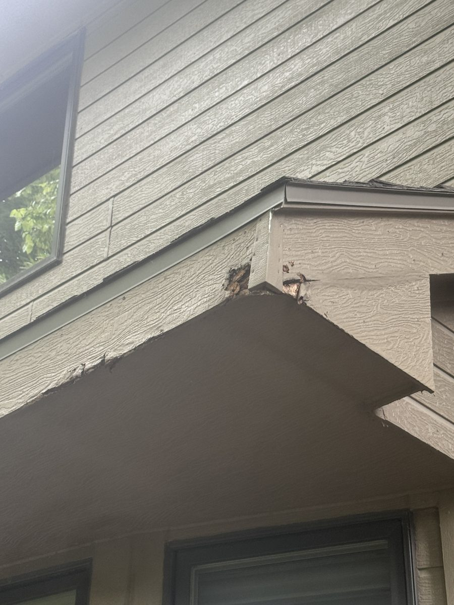
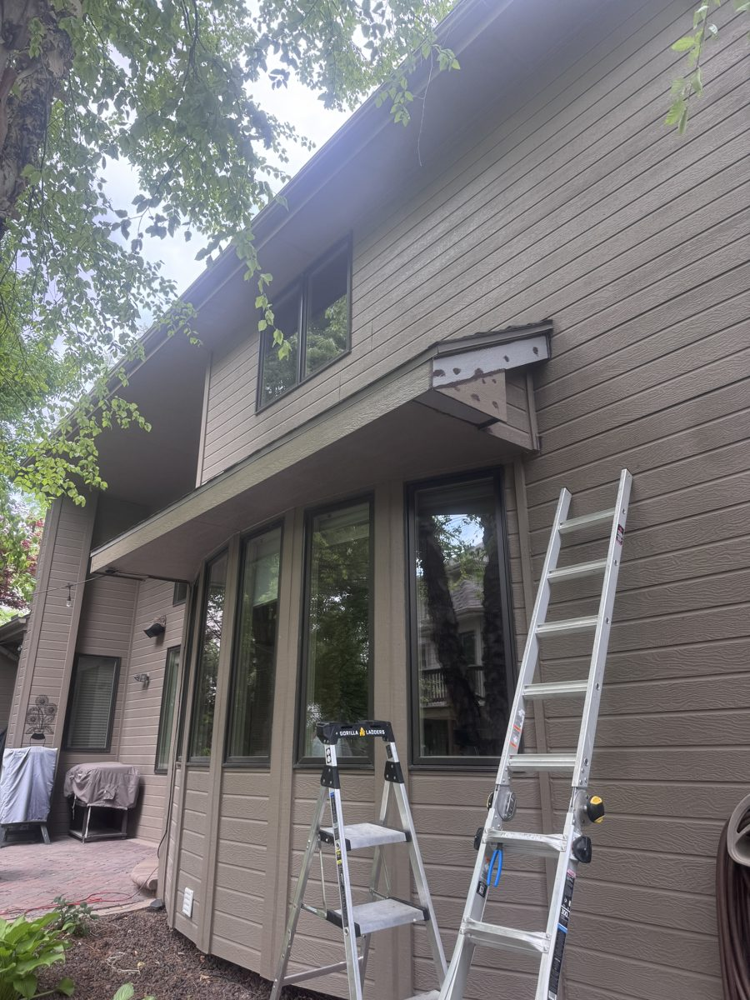

Soft, rotting trim and siding doesn’t fix itself — and it spreads. I cut out the damage, rebuild it right, and leave it ready for paint.
Request a Free Estimate Or call or text 402-350-2583
Before
DuringIt almost always starts the same way: a little moisture finds its way into a joint where the caulk has failed or the paint has worn thin. Once water is behind the surface, the wood underneath stays damp, and damp wood rots. By the time you can see it — a soft corner, a dark stain, paint that won’t stay stuck — the damage has usually been spreading for a while.
A lot of homes here in The Ridges and the surrounding West Omaha neighborhoods were built with engineered wood siding and trim — LP SmartSide, hardboard, and similar products. It’s good material when it’s sealed and painted properly. But on the spots that take the most weather — cantilevered box-outs, fascia ends, soffit corners, trim around windows and doors — the seams open up over the years, and Nebraska’s freeze-thaw cycle does the rest.
The thing about rot is that it doesn’t stop on its own. A corner that’s soft today is a bigger, more expensive repair next spring. Catching it early is almost always the difference between a spot repair and rebuilding a whole section.
If you’re not sure whether what you’re looking at is cosmetic or structural, that’s exactly what a free estimate is for. I’ll take a look and tell you straight — sometimes it’s a small fix, sometimes it needs real work, and either way you’ll know.
The most important part is the first line: removing all the rot. Patching over soft wood just hides the problem until it comes back bigger. Twenty-plus years on the tools has taught me that doing it right the first time is always cheaper than doing it twice.
Every wood rot and siding repair starts with a free on-site estimate. I look at the damage, tell you what it actually involves, and put a flat-rate written quote in your hands before any work starts — no hourly billing. With rot, there’s sometimes more damage behind the surface than shows from outside. If that happens, I stop and walk you through all the options before going further — nothing extra gets done without your okay. Materials are billed separately.
I fix the cause, not just the symptom. Rot is a moisture problem. If the flashing and sealing aren’t corrected, the new wood rots too. I make sure water stops getting in — that’s what makes a repair last.
I know the siding on these homes. LP SmartSide, hardboard, fiber cement — the engineered products on most West Omaha homes have specific repair methods. The right approach depends on what your house is actually built with.
Twenty-plus years of exterior work. Fascia, soffit, trim, box-outs, window and door surrounds — this is bread-and-butter carpentry I’ve been doing my whole career. I know what lasts and what doesn’t.
Catching it early saves you money. The honest truth is that a small repair handled now is far cheaper than a rebuilt section next year. If I look at your home and it’s genuinely minor, I’ll tell you that too.
A neighbor, right here in The Ridges. I live and work in this neighborhood. When you hire me, you get me — not a crew of strangers, not a subcontractor. Just solid work at the best value for my neighbors.
Press on the wood. Solid wood is firm; rotted wood is soft, spongy, or crumbles. Peeling paint with soft wood underneath is rot. Peeling paint over firm wood is usually just a paint issue. If you’re not sure, that’s what the free estimate is for — I’ll check it and tell you straight.
I remove all the rotted material down to clean, solid wood and rebuild from there. Patching or filling over soft wood only hides the problem — it keeps spreading underneath and comes back bigger. Doing it right the first time is always cheaper than doing it twice.
That’s the goal — when it’s done and painted, it should look like nothing ever happened. I rebuild with material that matches your siding and trim profile, and prime and paint to match your existing color, weather permitting.
Yes. Paint to finish the repair is part of how I deliver the job — not an upsell. Nebraska weather doesn’t always cooperate, so if it’s too cold or wet to paint right away, I’ll leave the new wood primed and come back to finish the paint when conditions allow.
The Ridges first, then Shadow Ridge, Armbrust Acres, Bay Shores, Leawood, and Pacific Park in West Omaha. If your neighborhood isn’t listed, reach out anyway — areas with the most interest get added first.
Free on-site estimate, no obligation. I’ll tell you straight whether it’s a small fix or real work — and put a flat-rate written quote in your hands before anything starts.
Request a Free EstimateOr call or text 402-350-2583